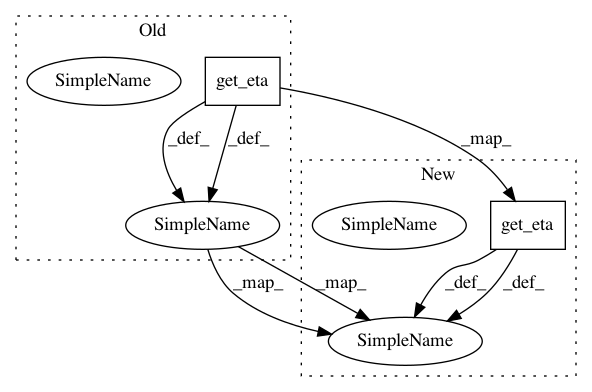

a7a3579460aad638f6f30005b14b6012361a12c1,w3af/core/controllers/core_helpers/status.py,CoreStatus,get_long_status,#CoreStatus#,577
Before Change
if not self.is_running():
return self.get_status()
data = {
"status": self.get_status(),
"cin": self.get_crawl_input_speed(),
"cout": self.get_crawl_output_speed(),
"clen": self.get_crawl_qsize(),
"ceta": self.epoch_eta_to_string(self.get_crawl_eta()),
"ain": self.get_audit_input_speed(),
"aout": self.get_audit_output_speed(),
"alen": self.get_audit_qsize(),
"aeta": self.epoch_eta_to_string(self.get_audit_eta()),
"gin": self.get_grep_input_speed(),
"gout": self.get_grep_output_speed(),
"glen": self.get_grep_qsize(),
"geta": self.epoch_eta_to_string(self.get_grep_eta()),
"perc": self.get_progress_percentage(),
"eta": self.epoch_eta_to_string(self.get_eta()),
"rpm": self.get_rpm()
}
After Change
if not self.is_running():
return self.get_status()
eta_seconds = self.get_eta()
data = {
"status": self.get_status(),
"cin": self.get_crawl_input_speed(),
In pattern: SUPERPATTERN
Frequency: 3
Non-data size: 2
Instances
Project Name: andresriancho/w3af
Commit Name: a7a3579460aad638f6f30005b14b6012361a12c1
Time: 2018-07-20
Author: andres.riancho@gmail.com
File Name: w3af/core/controllers/core_helpers/status.py
Class Name: CoreStatus
Method Name: get_long_status
Project Name: andresriancho/w3af
Commit Name: a0a4fd099e664bcbbd207df1368e9ce8d947a407
Time: 2018-07-21
Author: andres.riancho@gmail.com
File Name: w3af/core/controllers/core_helpers/status.py
Class Name: CoreStatus
Method Name: get_progress_percentage
Project Name: andresriancho/w3af
Commit Name: a7a3579460aad638f6f30005b14b6012361a12c1
Time: 2018-07-20
Author: andres.riancho@gmail.com
File Name: w3af/core/controllers/core_helpers/status.py
Class Name: CoreStatus
Method Name: get_status_as_dict